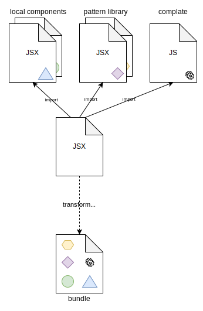
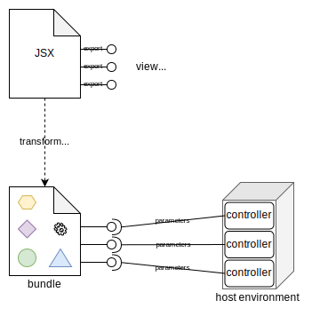
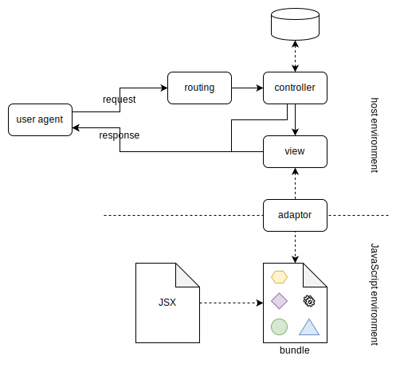

complate Adaptors
How the pieces fit together
How the pieces fit together
At its core, complate is a JavaScript library for generating HTML. It is typically used with JSX to provide a view layer in an HTTP environment.
JSX itself is not executable, so we need a compiler to turn it into executable JavaScript. In addition, multiple JSX/JavaScript modules are usually combined into a single “bundle” file, as this avoids relying on any particular engine’s module-loading mechanism.

The resulting bundle is loaded by the host environment, i.e. the respective adaptor (depending on the application’s primary technology stack). It exposes a set of view functions which assemble components and constitute a bridge between the host environment and components: The host environment invokes these functions via the adaptor while passing parameters, which then generates HTML.

Depending on the adaptor, parameters might be serialized (JSON-style primitives) or native objects (e.g. database records). Ideally complate writes its HTML directly to the HTTP response stream, though it can also be coerced into returning an HTML string instead.
